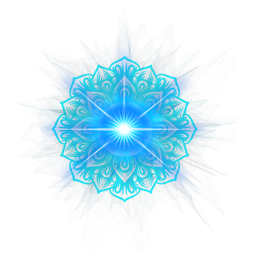
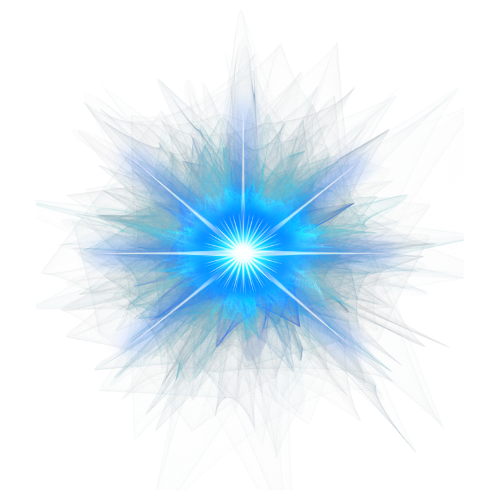

Seven logo ideas built from your two light images. Each sits on the night sky from the opening, with gold or starlight lettering in the same carved serif.

Path of theLight Keeper
1 · Mandala CrestThe mandala rises behind the title like a dawn. This is the main title card for the opening and the menu.
Path of theLight Keeper
1b · Mandala Crest with d20The same crest with a small crystal d20 at the heart of the Light, a quiet nod to the Crit Dice.
Path

f theLight Keeper
2 · The Lit OThe burst of Light becomes the O in "of". It is small and easy to read, and it works well on store pages and loading screens.
Path of theLight Keeper
3 · The PathA road of gold and starlight runs to the Light on the horizon. It tells the whole idea at a glance: you are walking toward Love.
4 · Keeper's SealA round gold seal around the mandala. It works as the app icon, a save badge, or the stamp on a Light Keeper's journal.
Path of theLight Keeper
5 · Side LockupMark and name side by side, for the top bar of menus and the website header.
Path of theLight KeeperA story on Talus
6 · First LightOnly the burst, with ornate capitals and the subtitle. It is the quietest of the six, made for the very first screen before the opening plays.